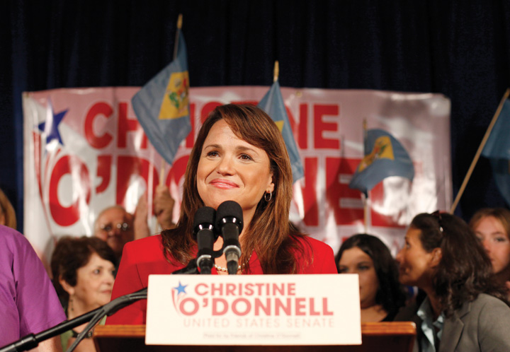

After reading this section, you should be able to answer the following questions:
Candidates in the information age not only have to manage traditional news media, such as newspaper and television news coverage; they also must contend with an ever-increasing number of new media platforms. New media enable candidates, voters, and journalists to engage in elections in novel ways. Entertainment media provide candidates with the opportunity to present their human side to voters. Candidates can attempt to exert control over political commentary, but they are not always successful.
Campaigns use new media, such as websites, e-mail, text messages, social networking sites, Twitter, and blogs, in three overlapping ways.Adapted from Kirsten A. Foot and Steven M. Schneider, Web Campaigning (Cambridge, MA: The MIT Press, 2006). New media can be used to inform voters about the candidate, including her biography, speeches and press releases, policy record, issue positions, endorsements, and attacks on the opponent. Candidates also can employ new media to get people involved in the election. New media can be used to recruit supporters and volunteers, raise funds, register voters, and get people to the polls on Election Day.Bruce Bimber and Richard Davis, Campaigning Online: The Internet in U.S. Elections (New York: Oxford University Press, 2003). Finally, new media can connect voters by enabling people to exchange information on behalf of the campaign, promote the candidate to others, and interact with others who share their views. In the 2010 midterm election, voters participated in meetups and tweetupsMeetings of voters during campaigns that are organized through social media., offline meetings that were organized through social media, such as Twitter feeds.
The importance of social media in elections has grown in recent election campaigns. Candidates regularly establish Facebook pages to communicate with supporters, especially younger voters. In 2010, 74 percent of House candidates and 81 percent of Senate candidates with the most Facebook friends won their elections.
People use digital media to participate in new ways, often outside the context of campaign organizations. Facebook, Delicious, LiveJournal, Foursquare, Twitter, and Tumblr are used for political expression and networking. These platforms are versatile, and allow users to post their support for a candidate, link to outside content, such as a candidate’s website, share photos and videos, express opinions, and share comments. In 2008, 5.4 million people used the “I voted” button on Facebook to let their friends know that they had taken part in the election. More than 12 million people clicked on this button in the 2010 midterm campaign.
The mainstream media have incorporated social media into their election coverage. News organization websites feature social media applications, such as Facebook links. In 2010, the Washington Post sponsored a promoted trend, #Election, on the Twitter.com homepage to allow users to view election coverage. The New York Times and CNN analyzed voter tweets as part of their campaign reporting.
Campaigns make use of video-sharing platformsDigital media that allow people to post campaign-related videos and share them with others through links, e-mail, and social media. in order to make their ads, speeches, and appearances available to voters and journalists. Videos are posted on candidate and political-party websites as well as on public video-sharing platforms, such as YouTube and Hulu. Online videos have become a popular source of information for voters. In 2008, videos produced by the Obama campaign were accessed 37 million times during the primary.Ron Brownstein, “The First 21st Century Campaign,” National Journal, April 26, 2008, 26–32.
People posted campaign videos on YouTube that were circulated virally through e-mail messages, blog posts, and Facebook messages. While most videos posted by voters were selections from media broadcasts, such as debates, and clips of live events, such as candidate rallies, some original user-generated videos attracted extensive mainstream press coverage.
“Vote Different” was first aired in March 2007 and featured a mashupA digital presentation that combines material from a variety of sources, such as voter-produced campaign videos that combine existing footage of candidates with original content. of Hillary Clinton speeches with an Apple commercial that depicted Clinton in the fearful role of “Big Brother.” The video was the creation of a producer with tenuous ties to the Obama campaign, who had placed the ad on YouTube without authorization. This video was viewed millions of times and generated thousands of comments. It sparked a tidal wave of user-produced campaign videos.
Vote Different
(click to see video)“Vote Different” was a user-produced video attacking Hillary Clinton that aired during the 2008 presidential primary campaign.
Comedic videos are popular with voters and can garner mainstream media publicity. Perhaps the most popular video of the 2008 campaign was “Obama Girl…Cause I got a crush on Obama.” The video, which first aired in November 2007, starred aspiring actress-model Amber Lee Ettinger wearing a bikini and lip-synching a song about her love for Obama. “Obama Girl” prompted copycat videos for other candidates, including the “Fabulous McCain Girl,” who turns into the Incredible Hulk as she defends her candidate.
Best of Obama Girl: Crush on Obama
(click to see video)“Obama Girl” video from the 2008 presidential campaign.
Incredible McCain Girl—Hulk Spoof
(click to see video)“Fabulous McCain Girl” video from the 2008 presidential campaign.
Another prominent video featured a mashup of clips from Barack Obama’s concession speech after he failed to win the New Hampshire primary, along with clips of actors and musicians stating, “Yes, We Can,” a line from Obama’s speech. The video, produced by Will.i.am of the rock group Black Eyed Peas, was posted on dipdive.com and YouTube. The video received over 16 million views during the campaign and helped to mobilize voters after Obama’s New Hampshire primary defeat.
Yes We Can—Barack Obama Music Video
(click to see video)“Yes, We Can” video from the 2008 presidential election.
Media depictions of candidates often focus on candidates’ personalities, personal lives, flaws, and faults. For this reason, candidates seek to convey a positive personal image through entertainment media. Presidential candidates are as likely to grace the cover of the entertainment weekly People magazine as they are to be depicted on the front of newsmagazines, such as Time and Newsweek.
John McCain and His Family on the Cover of People
The only photo of John McCain with his entire family appeared in People magazine, which was given an exclusive to photograph the family during the Republican National Convention.
View the image at http://www.people.com/people/article/0,,20224638,00.html
Candidates and their spouses participate in popular culture and go on entertainment shows to display their human touch, identify with ordinary folk, and connect with members of an audience that is otherwise hard to reach. Their ability to influence the contents of these shows varies.
Easiest are shows with hosts such as Oprah and Larry King because they usually ask softball questions easy to anticipate and answer. Oprah endorsed Obama for president, and his slogan “Yes we can” evoked her theme of helping people help themselves.
Candidates go on late-night talk shows, engaging in conversation with hosts Jay Leno and David Letterman. They also appear on Saturday Night Live and participate in its sketch comedy. They are interviewed by Jon Stewart on The Daily Show, which is popular with young voters.
In these appearances they try to come across as people rather than politicians, and by jesting with the hosts, they dissipate the negative effects of the jokes previously made about them. Some of these interchanges may be less spontaneous and more controlled by the candidates than it appears. According to Jay Leno, “Plenty of times when politicians are here, we write jokes for them. We try to make it comfortable.”Marshall Sella, “The Stiff Guy vs. the Dumb Guy,” New York Times Magazine, September 24, 2000, 75.
Campaigns have some influence over the contents of the cable television shows that generate commentary through the legions of candidates’ representatives and party strategists ushered in and out of the studios. However, they often are granted insufficient time to make their cases, which can result in argument and conflict rather than constructive discussion.
Campaigns’ influence with commentators also varies. These editorialists, columnists, and pundits are paid to have opinions and express them. Some of them are open to argument and persuasion. Others—such as staunch conservatives Rush Limbaugh on radio and Sean Hannity and Bill O’Reilly on Fox TV, and liberal Rachel Maddow on MSNBC—are impervious to the efforts of candidates and campaign media advisors they disagree with to change their minds. They are more inclined to transmit the message of the day or talking points (perspectives and arguments) of a candidate with whom they agree and promote.
The election media environment is fast paced and saturated with information. The Internet enables campaigns to send journalists a barrage of e-mails containing endorsements, policy pronouncements, negative information about the opponent, and instant responses to news stories. Campaigns can post ads and videos of candidates for journalists to use in their reports. The new media make available reams of election-related content—an endless swirl of poll data, commentary, speculation on sites such as RealClearPolitics.com, Politico.com, and HuffingtonPost.com. Partisan argument abounds on blogs such as Daily Kos and Instapundit, providing insights, passion, humor, and rambling screeds.
The electoral environment, with its plethora of traditional and new media sources, can overwhelm voters with information. Despite this abundance, voters are not well informed about issues, which take a backseat to the horse race in campaign reporting.
Journalists check the accuracy of candidates’ statements, compare past votes and positions with current assertions, and analyze political advertisements. The media themselves are watched, checked, and corrected by sites like campaigndesk.org, mediamatters.org, and daily-howler.com. Yet, it is challenging for reporters to fact-check carefully and meet the demands of the twenty-four-hour news cycle. Bloggers and other commentators who are not schooled in journalistic practices and ethics can disseminate information without checking its veracity. As a result, voters increasingly encounter misleading information during elections. Forty-two percent of voters believed that Barack Obama was not born in the United States, a fallacy that was widely circulated in all types of media.Clay Ramsay, Steven Kull, and Evan Lewis, “Misinformation and the 2010 Election: A Study of the U.S. Electorate,” WorldPublicOpinion.org, Program on International Policy Attitudes, University of Maryland, College Park, MD, December 10, 2010. http://www.worldpublicopinion.org/pipa/pdf/dec10/Misinformation_ Dec10_rpt.pdf.
Candidates must be more guarded than ever. Any careless or provocative comment can be caught on camera and immediately distributed around the world. Incidents from the past, preserved on tape, can haunt candidates. A media feeding frenzy developed around Delaware Republican Senate candidate Christine O’Donnell, who was backed by the Tea Party, as a result of statements that she had made on “Politically Incorrect” with Bill Maher in 1999 that she had “dabbled in witchcraft” when she was in high school. The clip was circulated through social media and made national news. O’Donnell lost the election.
Figure 11.17 Christine O’Donnell Campaigning in 2010
Delaware Republican Senate candidate Christine O’Donnell made headlines when a ten-year-old video clip in which she professed dabbling in witchcraft surfaced during the 2010 election.
Source: Used with permission from AP Photo/Rob Carr.
The campaign media environment in the information age is complex and fast paced. Candidates, voters, and journalists must contend with a wide array of old and new media platforms. While traditional media primarily serve to inform voters, new media also involve voters in campaigns and help them to interact with others. Candidates’ appearances in entertainment media as well as discussions on commentary programs can influence voters’ perceptions. Today, candidates face intensive scrutiny not only from journalists but also from average people who report their actions using new media.
Young People Taking Part in Campaigns and Elections
One of the primary goals of American civic education is to prepare young people to take part in election campaigns. Traditionally, this involves studying the democratic principles underlying elections, learning how the electoral process works, registering to vote and locating a polling place, and acquiring the basic skills necessary to follow campaigns through mainstream media. All of these things are fundamental precursors to exercising the right to vote.
In the current era, civic education also needs to take into account the new ways that people are engaging in elections. The next generation of voters should be schooled in how social media and other digital tools can be used in campaigns. Young people have been effective in developing new media election applications. They have innovated with established formats, such as campaign websites and blogs, to produce content that is more appealing to younger voters. Online versions of college newspapers have featured first-person accounts of campaign events using streaming video and interviews with candidates from dorm rooms. Young people were among the first to use Facebook, YouTube, and Twitter for campaign participation. As the number of platforms continues to evolve, such as microblogging sites like Tumblr, young voters will surely be among the first to develop them for campaign use.
Young people are ahead of the curve in using new media, compelling candidates to catch up. While candidates have incorporated social media into their campaigns, they have not always made good use of these platforms. Young citizens can be essential to campaign organizations in getting candidates up to speed with new media.
Rock the Vote
The Rock the Vote website offers a gateway to participation in elections. It includes a feature “Democracy Class” that provides interactive lesson plans for teaching about civics and the voting process, including new media use.
Learn more about Rock the Vote’s mission at http://www.rockthevote.org.